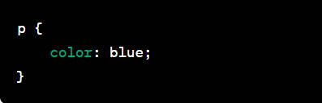

SELECTORES SIMPLES:
-
Selector de Etiqueta:
Este selector apunta a elementos HTML específicos mediante su nombre de etiqueta. Permite aplicar estilos a todos los elementos que comparten dicha etiqueta.
 -
Selector de Clase:
Al utilizar este selector, se identifican elementos HTML que han sido etiquetados con una clase específica, permitiendo aplicar estilos exclusivamente a aquellos elementos que comparten esa clasificación.

-
Selector por ID:
Este selector se centra en un elemento HTML único identificado por su atributo de ID único. Facilita la aplicación de estilos a ese elemento específico.

-
Selector universal:
Este selector abarca todos los elementos en la página, posibilitando la aplicación global de estilos. Sin embargo, se debe utilizar con precaución, ya que puede afectar toda la estructura.

SELECTORES COMPUESTOS:
-
Selector Descendiente:
Permite apuntar a elementos secundarios dentro de un elemento principal, definiendo así una jerarquía en la aplicación de estilos.

-
Selector Hijo(s) Directo
Similar al selector descendiente, este se enfoca exclusivamente en los elementos hijos directos de un elemento principal, sin considerar descendientes más profundos. Selector Hermano Siguiente o Adyacente: Este selector apunta al elemento que sigue inmediatamente después de un elemento específico, siempre y cuando compartan el mismo elemento padre.

-
Selector Hermano Siguiente o Adyacente:
Este selector apunta al elemento que sigue inmediatamente después de un elemento específico, siempre y cuando compartan el mismo elemento padre.

-
Selector Hermanos Siguientes o Adyacentes:
Extiende la funcionalidad del selector anterior al aplicar estilos a todos los elementos hermanos que siguen después de un elemento específico, siempre y cuando compartan el mismo elemento padre.

-
Selector Anidamiento:
Facilita la aplicación de estilos a elementos que están anidados o contenidos dentro de otros elementos, estableciendo así una estructura de jerarquía más profunda.